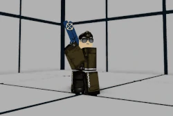
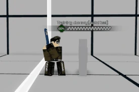
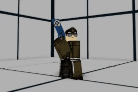

Ezra Blakely or Avalon is a Zoner/Rushdown hybrid class aligned with the Phantom faction that utilizes a pistol, holographic technology, and a sniper mech, R.A.W.A.N #01. Avalon's excellence is to keep his own offense safe and pressure the enemy - be it near or far. Avalon can surely pressure you to no end and exhaust your thinking; will you crack?
A mercenary hired by Phantom as a hitman of the Wolf Division. When his superiors want a dirty deed done, regardless of the method, Avalon is happy to oblige. Accompanied by a custom-engineered sniper gundam named R.A.W.A.N. #01, Avalon is often assigned to exterminate critical targets that threaten the Phantom agenda.
Avalon's Heavy Autocombo (H.AC) is replaced with a short animation that requires 1/2 bar of Heat, which will grant him an aura with a color dependent on his current level of Heat.
While this aura is active, the next SP1, SP2, SP3 or Launcher Avalon performs will perform its "Doppelgänger" variant, and will behave differently when performed.
(GROUND) - Avalon takes aim with his gun and fires a bullet point-blank into the enemy's face, causing them to crumple. Prompts an opportunity to combo. Has Lv. 2 Armor Break.
(GROUND) - Avalon takes aim with his gun in a manner identical to his Guardbreak, only to feint and instantly deliver an uppercut with his free hand.
If Avalon's Passive (Doppelgänger) is active, then upon hit, a Doppelgänger will appear from the ground beneath Avalon to grab the enemy mid-air, then powerbomb them into the ground. Inflicts knockdown.
6 inputs, 196 damage, A Scaling
1 input, activates Passive (Doppelgänger), requires 1/2 bar of Heat
